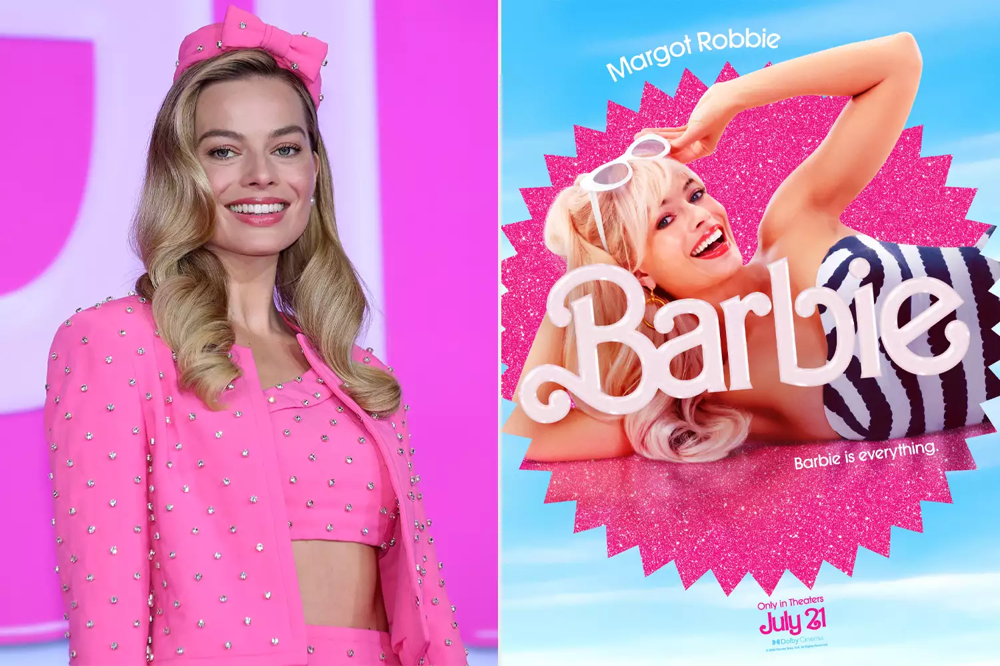

Barbie The Movie
Overview
Babrie The Movie Summary
Step into a world of glamour, fun, and endless possibilities in the highly anticipated Barbie Movie! Directed by Greta Gerwig, this hilarious and heartfelt adventure brings the beloved doll to life in an unforgettable journey that blends fantasy, comedy, and real-world challenges.
The Story

In the dazzling, pastel-perfect world of Barbieland, Barbie (Margot Robbie) lives the ultimate dream—endless parties, perfect outfits, and a flawless daily routine. But when she begins experiencing strange thoughts and unexpected mishaps (like flat feet!), she realizes something isn’t quite right. To find answers, Barbie ventures into the real world, with Ken (Ryan Gosling) tagging along for the ride. As they navigate Los Angeles, Barbie discovers the complexities of human emotions, societal expectations, and self-worth, while Ken stumbles upon an entirely new concept—patriarchy—and hilariously tries to make sense of it. Along the way, Barbie meets Gloria (America Ferrera), a woman who helps her understand the pressures of being “perfect”, and encounters the CEO of Mattel (Will Ferrell), who is determined to put her “back in the box.” With laugh-out-loud moments, emotional revelations, and powerful messages, Barbie’s journey becomes one of self-discovery, empowerment, and breaking free from expectations.
Get Your Tickets Now
Don’t miss the must-see movie of the year! Grab your tickets and step into the world of Barbie today!